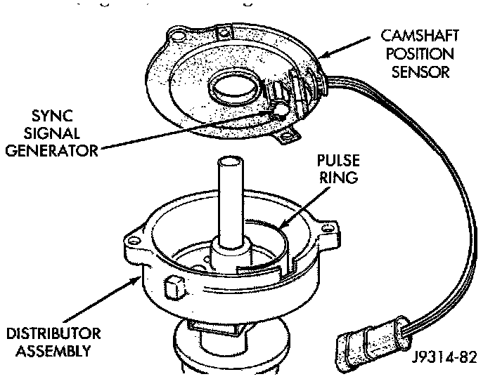

Component Test
CAMSHAFT POSITION SENSORFig. 13 CPS - Typical - V8 Shown:

The camshaft position sensor is located in the distributor (Fig. 13).
To perform a complete test of this sensor and its circuitry, refer to Powertrain Management/Computers and Control Systems/Testing and Inspection.
Testing and Inspection
To test the sensor only, refer to the following:
For this test, an analog (non-digital) voltmeter is needed. Do not remove the distributor connector from the distributor. Using small paper clips, insert them into the backside of the distributor wire harness connector to make contact with the terminals. Be sure that the connector is not damaged when inserting the paper clips. Attach voltmeter leads to these paper clips.
1. Connect the positive (+) voltmeter lead into the sensor output wire. This is done at the distributor wire harness connector.
2. Connect the negative (-) voltmeter lead into the ground wire.
3. Set the voltmeter to the 15 Volt DC scale.
4. Remove distributor cap from distributor (two screws). Rotate (crank) the engine until the distributor rotor is pointed to approximately the 11 O'clock position. The movable pulse ring should now be within the sensor pickup.
5. Turn ignition key to ON position. Voltmeter should read approximately 5.0 volts.
6. If voltage is not present, check the voltmeter leads for a good connection.
7. If voltage is still not present, check for voltage at the supply wire.
8. If 5 volts is not present at supply wire, check for voltage at PCM 32-way connector (cavity A-17). Leave the PCM connector connected for this test.
9. If voltage is still not present, perform vehicle test using the DRB scan tool.
10. If voltage is present at cavity A-17, but not at the supply wire:
a. Check continuity between the supply wire. This is checked between the distributor connector and cavity A-17 at the PCM. If continuity is not present, repair the harness as necessary
b. Check for continuity between the camshaft position sensor output wire and cavity A-18 at the PCM. If continuity is not present, repair the harness as necessary.
c. Check for continuity between the ground circuit wire at the distributor connector and ground. If continuity is not present, repair the harness as necessary
12. While observing the voltmeter, crank the engine with ignition switch. The voltmeter needle should fluctuate between 0 and 5 volts while the engine is cranking. This verifies that the camshaft position sensor in the distributor is operating properly and a sync pulse signal is being generated.
If sync pulse signal is not present, replacement of the camshaft position sensor is necessary